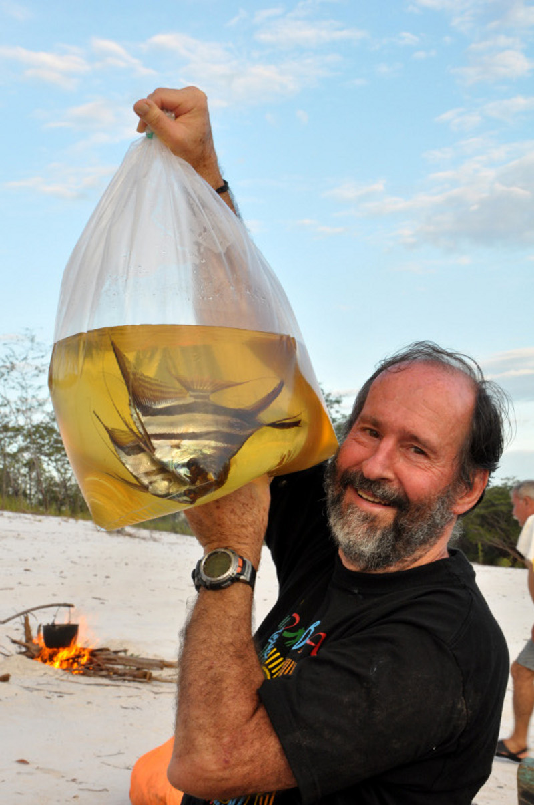

Our expeditions are always well researched, including new areas not collected by commercial collectors, so the chances of encountering new species or lost or ‘forgotten’ species are good. Leading the expeditions are organized group of Researchers, Explorers, Photographers and specialist bilingual guides who have an extensive knowledge of the species, variety and habitats. There are also Indigenous tribes who reside in the remote parts of forests among the tributaries of the Amazon and have reliable knowledge of the forest which is essential for the expedition.
Walks and expeditions to the rivers and forests around Tacana Community with Miraña and Huitoto Indian guides. Over 180 species of fish are recorded from the Tacana river alone. New species are being found regularly. In late 2006 this corydoras in the fowleri group was discovered nearby.
The Tacana Indians who live there utilize traditional fishing methods. When the floods recede at the beginning of the dry season, they capture fish in the pools left by receding waters. They also shoot fish with bows and arrows and drug them with the sap of the soliman tree. Large siluroid fish are caught using a wooden double hook, the design of which is unique to South America. In addition to dogs, the Tacana raise chickens, and in the twentieth century adopted cattle and horse husbandry. The Tacana are also skilled at horticulture of banana, and mango inside the forest.
We will travel upstream from Benjamin Constant in motor canoe to Zacambu lodge, which will take 2 hours to travel by boat, and the destination point will be our base for the next three days. If we are lucky, we can get to experience the behavior of Pink Amazon river dolphins and jumping ability of Salton catfish along the way. We will explore the Zacambu reserve, which is a complex of oxbow lakes and flooded forest alongside the Yavari River a major river of the region, hence we find many biotopes that contrast sharply with those found at Tacana.
Zacambu has an abundance of fish species, the area has been lightly collected for corydoras and ancistrus but also has a diversity of other fish that is largely unexplored. We can expect to find many tetras, doras, apistogramas, rays, piranhas, cetopsids, angelfish and many other species.
The Tapajós river is one of three major clearwater rivers in the Amazon Basin (the others are Xingu and Tocantins; the latter arguably outside the Amazon).The river has highly cystal clear waters with low conductivity and relatively low levels of dissolved solids with blackwater rivers, but differ from these in having water that at most only is somewhat acidic (typical pH ~6.5) and can be very clear with a greenish hue.
This river basin has about 325 different fish species, including 65 endemic species, where one of the highly sort after species of "Earth eating cichlid" resides, which is knwon as the Geophagus Tapajós. There are also other equally interesting fish species found in this location. Many of these species have only been discovered within the last decade, and a conservative estimate suggests more than 500 fish species eventually will be recognized in this river basin.